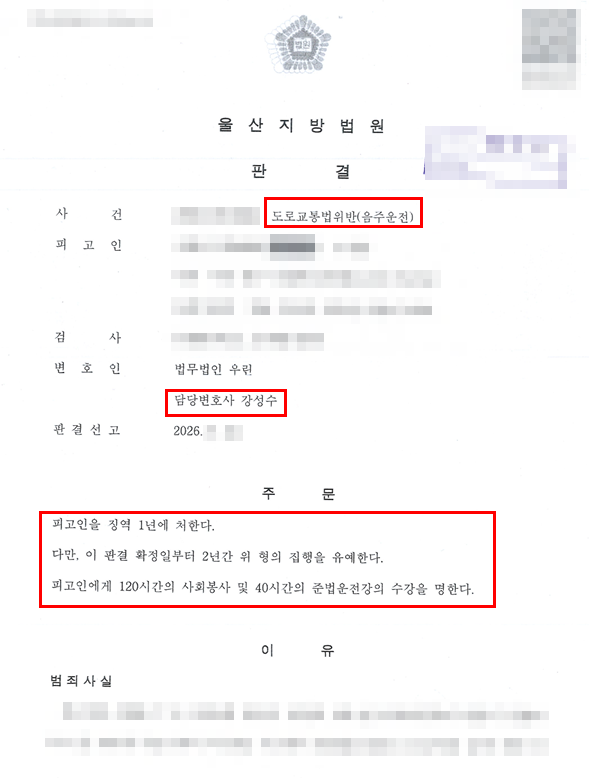

핵심 결과
의뢰인은 과거 음주운전으로 처벌받은 전력이 있는 상태에서 다시 술을 마시고 운전했습니다.
이번에는 교통사고까지 발생해 단순 음주운전 사건보다 실형 위험이 높았습니다.
강성수 변호사는 사고 이후의 피해 회복 과정, 생활환경, 재범 방지 노력과 양형자료를 사건 흐름에 맞춰 정리했습니다.
그 결과 법원은 징역 1년, 집행유예 2년을 선고했습니다.
| 구분 | 내용 |
|---|---|
| 사건 분야 | 음주운전·교통사고 |
| 불리한 사정 | 동종 음주운전 전력, 재범, 사고 발생 |
| 핵심 대응 | 피해 회복, 재범 방지, 생활환경과 양형자료 정리 |
| 최종 결과 | 징역 1년·집행유예 2년 |
| 부가 명령 | 사회봉사 120시간, 준법운전강의 40시간 |
사건 개요
이번 사건은 음주운전 단속만으로 끝난 사건이 아니었습니다.
의뢰인에게는 이미 동종 음주운전 전력이 있었고, 다시 음주운전을 하던 중 사고까지 발생했습니다.
재범 사건은 초범보다 엄격하게 판단될 가능성이 큽니다. 여기에 사고 피해까지 더해지면 수사와 재판에서는 과거 처벌이 재범을 막지 못했다는 점과 피해 회복 여부를 함께 살피게 됩니다.
따라서 막연히 반성한다는 말만 반복해서는 충분하지 않았습니다.
실형 위험을 높인 요소
- 과거 음주운전 처벌 전력이 있었던 점
- 다시 음주운전을 한 재범 사건인 점
- 운전 과정에서 사고가 발생한 점
- 재범 위험과 피해 회복을 함께 설명해야 했던 점
핵심 쟁점
첫 번째 쟁점은 사고 경위와 피해 정도였습니다.
보험 처리만으로 모든 문제가 끝나는 것은 아닙니다. 형사재판에서는 피해가 실제로 어느 정도 회복됐는지, 피해자와의 관계가 어떻게 정리됐는지를 별도로 살필 수 있습니다.
두 번째 쟁점은 재범 가능성이었습니다.
동종 전력이 있는 경우에는 다시는 운전하지 않겠다는 말보다 음주 습관과 이동 방법을 실제로 어떻게 바꿨는지 보여주는 자료가 필요합니다.
세 번째 쟁점은 의뢰인의 생활환경과 형이 미칠 영향이었습니다.
직업, 가족관계, 부양 사정만 나열하지 않고 사건 이후의 변화와 연결해 설명해야 했습니다.
변호 전략
1. 사고와 피해 회복 과정을 먼저 정리했습니다
사고 발생 경위, 보험 처리와 피해 회복 내용을 시간순으로 정리했습니다. 재판부가 피해가 방치되지 않았다는 점을 객관적으로 확인할 수 있도록 관련 자료를 준비했습니다.
2. 동종 전력을 숨기지 않고 재범 방지 계획을 구체화했습니다
과거 처벌과 이번 사건의 차이를 확인하고, 음주 후 이동 방법과 차량 관리 등 다시 같은 일이 발생하지 않도록 취한 조치를 자료로 만들었습니다.
3. 생활환경과 양형자료를 사건에 맞게 선별했습니다
반성문과 탄원서를 많이 내는 데 그치지 않고, 의뢰인의 직업과 가족관계, 사회적 유대, 사건 이후 태도를 확인할 수 있는 자료를 선별해 제출했습니다.
결과
법원은 의뢰인에게 징역 1년을 선고하면서 그 형의 집행을 2년간 유예했습니다.
아울러 사회봉사 120시간과 준법운전강의 40시간을 명했습니다.
최종 결과: 집행유예
동종 음주운전 전력과 사고 발생이라는 불리한 사정이 있었지만, 실형 구금을 피하고 집행유예로 사건을 마무리했습니다.
비슷한 사건에서 자주 묻는 질문
| 질문 | 답변 |
|---|---|
| 동종전과가 있으면 반드시 실형인가요? | 반드시 그렇지는 않지만 전력의 횟수와 시기, 수치, 사고와 피해 정도를 종합해 판단하므로 초범보다 엄격하게 준비해야 합니다. |
| 보험으로 처리하면 합의는 필요 없나요? | 보험 처리와 형사절차는 구분됩니다. 사고 유형과 피해 정도에 따라 피해 회복과 합의가 중요한 자료가 될 수 있습니다. |
| 반성문을 많이 내면 도움이 되나요? | 분량보다 사건 이후 실제 변화와 재범 방지 조치가 구체적인지가 중요합니다. |
| 직장이 있으면 집행유예를 받을 수 있나요? | 직업은 여러 사정 중 하나일 뿐이며 결과를 보장하지 않습니다. 피해 회복과 전력, 재범 위험 등을 함께 봅니다. |
| 언제 상담하는 것이 좋나요? | 사고 직후 또는 첫 경찰조사 전에 기록과 진술 방향을 점검하는 것이 좋습니다. |
결론
음주운전 재범에 사고까지 발생한 사건은 한 가지 자료만으로 대응하기 어렵습니다.
사고 경위, 피해 회복, 과거 전력과 재범 방지 조치를 하나의 흐름으로 정리해야 합니다.
강성수 변호사는 사무장이나 상담실장을 거치지 않고 사건 자료를 직접 확인해 현재 단계에서 필요한 대응 방향을 상담합니다.
이 글은 일반적인 법률 정보 제공을 위한 자료이며, 개별 사건의 결과를 보장하지 않습니다. 구체적인 대응은 사실관계와 증거에 따라 달라질 수 있습니다.